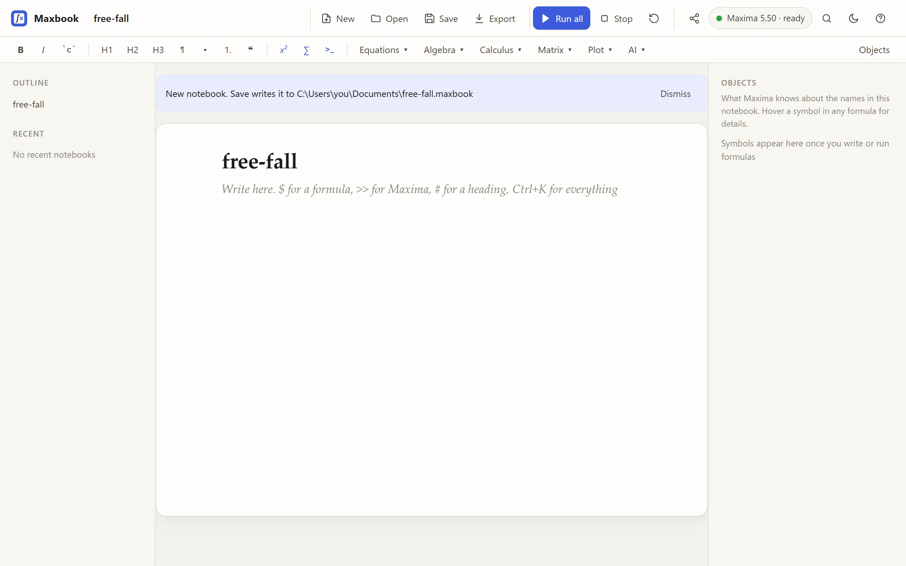
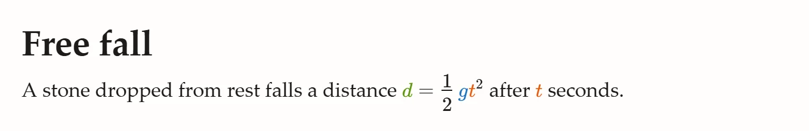
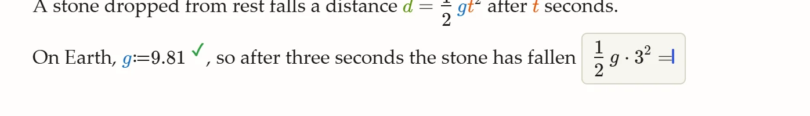
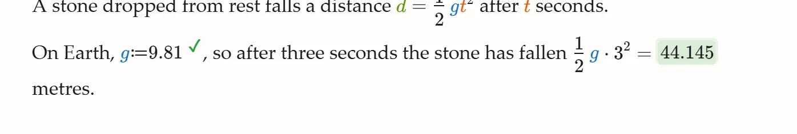
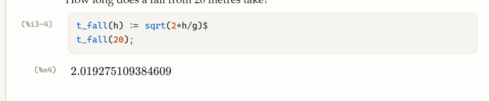
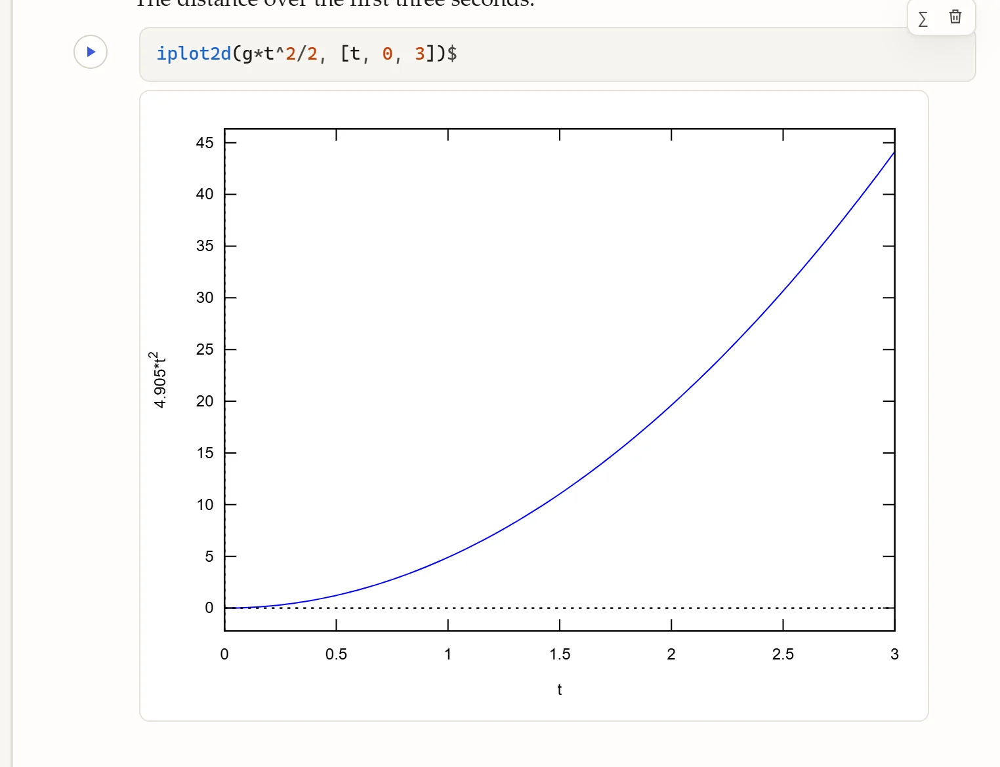
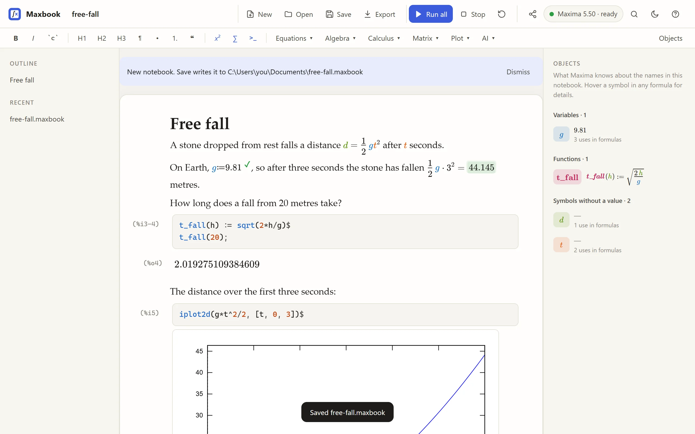

Your first notebook
In this tour you write a short note about a falling stone: some text, a formula, a value computed by Maxima, a small Maxima program and a plot. It takes about ten minutes. You need Maxbook and Maxima installed (Install).
Start a new notebook
Start Maxbook with the name of a file that does not exist yet:
maxbook free-fall.maxbook(With the single-file program, use its file name instead of maxbook, for example ./maxbook-0.5.0-linux-x64 free-fall.maxbook.
You can also start it without a name and use Save later.)

The window has three columns: the outline of your headings on the left, the document in the middle, and the Objects panel on the right, which lists what Maxima knows. At the top are the file commands, Run all, Stop, and the pill that shows whether Maxima is ready. Below them is the format bar: bold, italic, code, headings, lists, and the menus that write Maxima code for you.
Write text with a formula
-
Click the heading and replace it with Free fall. Press ↓ to go to the empty line below it.
-
Type "A stone dropped from rest falls a distance" and a space, then type
$. A formula box opens where the cursor is. -
Type
d=1/2, press → to leave the fraction, then typegt^2. Press Esc (or → at the end of the formula) to return to the text. -
Finish the sentence: type " after ", then
$,t, Esc, and " seconds."

You type formulas the way you would say them: / makes a fraction, ^ a power, and → leaves a fraction or an exponent.
Each name gets its own colour, the same everywhere in the notebook.
Typing a word such as frac, int, sum, sqrt or matrix inside a formula opens a list of templates; see Computing with formulas.
|
Let Maxima compute a value
-
Press Enter for a new paragraph and type "On Earth," and a space.
-
Type
$, theng:=9.81, and press Tab.:=means "define": Maxima now knowsg, and a green ✓ confirms it. -
Continue the sentence with ", so after three seconds the stone has fallen ", then type
$and1/2, →,g*3^2, →,=.

-
Press Tab. Maxima works out the value and writes it after the
=:

This is compute in place: any formula that ends in = gets its value when you press Tab.
If the formula changes, press Tab in it again; Run all recomputes every one of them.
Write a small Maxima program
Formulas are good for mathematics you want to read. For anything longer, use a Maxima block, which holds ordinary Maxima input.
-
Write a question as text, for example
How long does a fall from 20 metres take?, and press Enter. -
Type
>>and a space. A Maxima block appears. -
Type
t_fall(h) := sqrt(2*h/g)$ t_fall(20);and press Shift+Enter to run it.

The block uses g, which you defined in the text above: formulas and blocks share one Maxima session.
Statements ending in $ run silently; those ending in ; show their result, with Maxima’s %o label.
Hover over a result to copy it as LaTeX or as Maxima input.
Add a plot
-
Type a sentence, press Enter, type
>>and a space. -
Type
iplot2d(g*t^2/2, [t, 0, 3])$and press Shift+Enter.

iplot2d takes the same arguments as Maxima’s plot2d and draws into the notebook.
There are also iplot3d, idraw2d, idraw3d and idraw; see Maxima blocks, plots and questions.
Save
Press Ctrl+S (Cmd+S on a Mac). Because you named the file when you started Maxbook, it is saved right away; otherwise Maxbook asks where.

Look at the Objects panel on the right: it lists the variable g with its value, the function t_fall with its definition, and the names that have no value yet (d, t).
A .maxbook file keeps everything, results included, so it opens exactly as you left it.
Next time, open it and press Run all to recompute it from the top.
What next
-
Computing with formulas: display formulas, templates, evaluating integrals and sums.
-
Maxima blocks, plots and questions: questions from Maxima, stopping a long computation, 3D plots.
-
Menus and the command search: let Maxbook write the Maxima code.